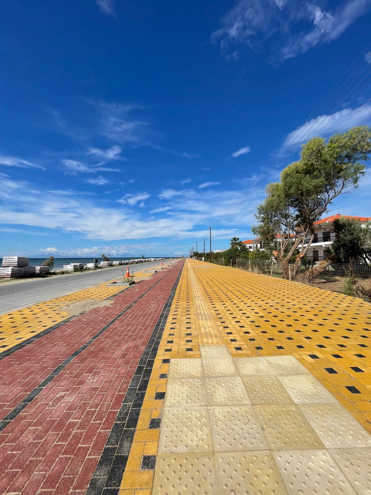
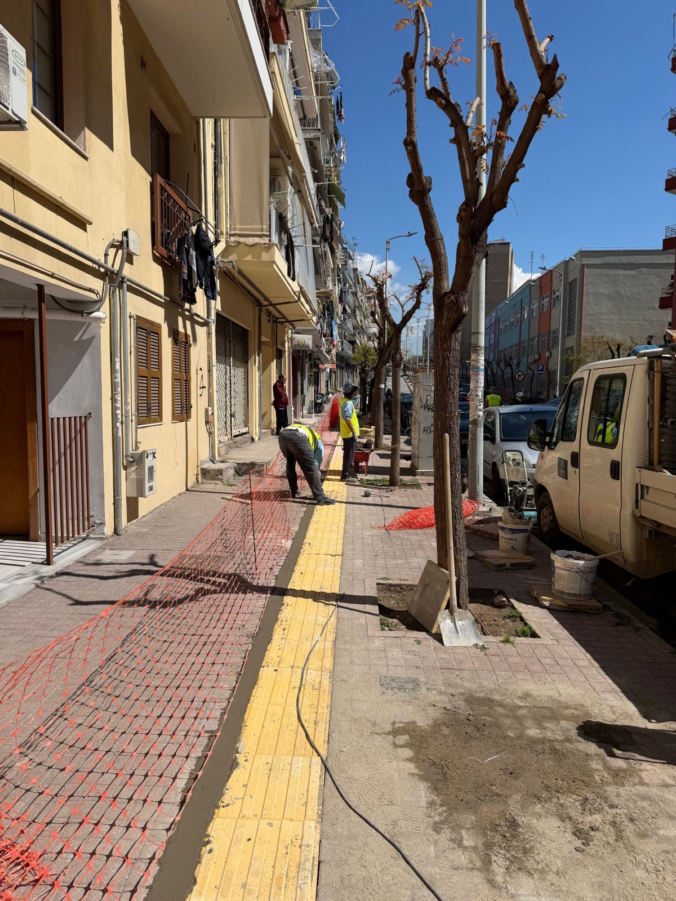
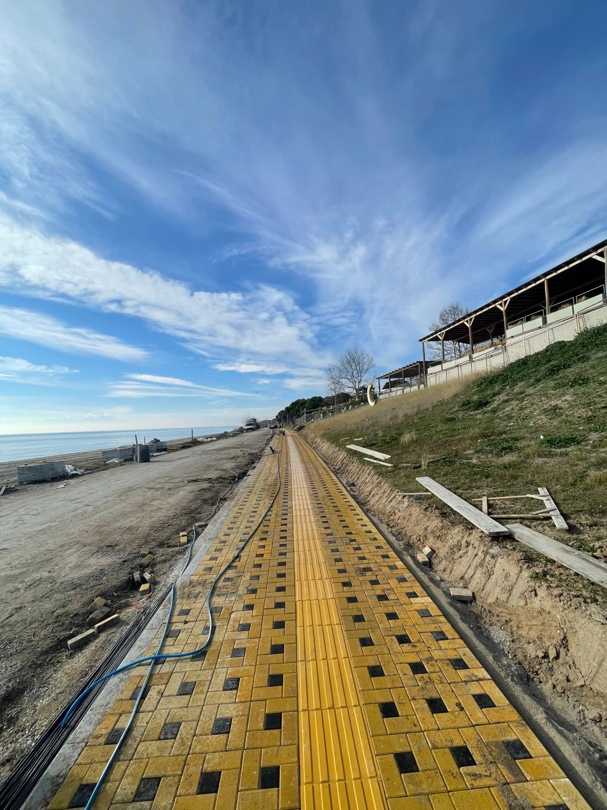
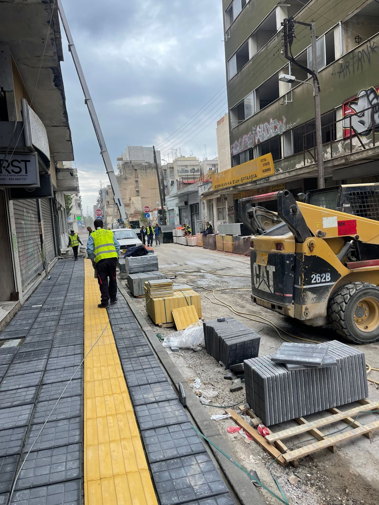
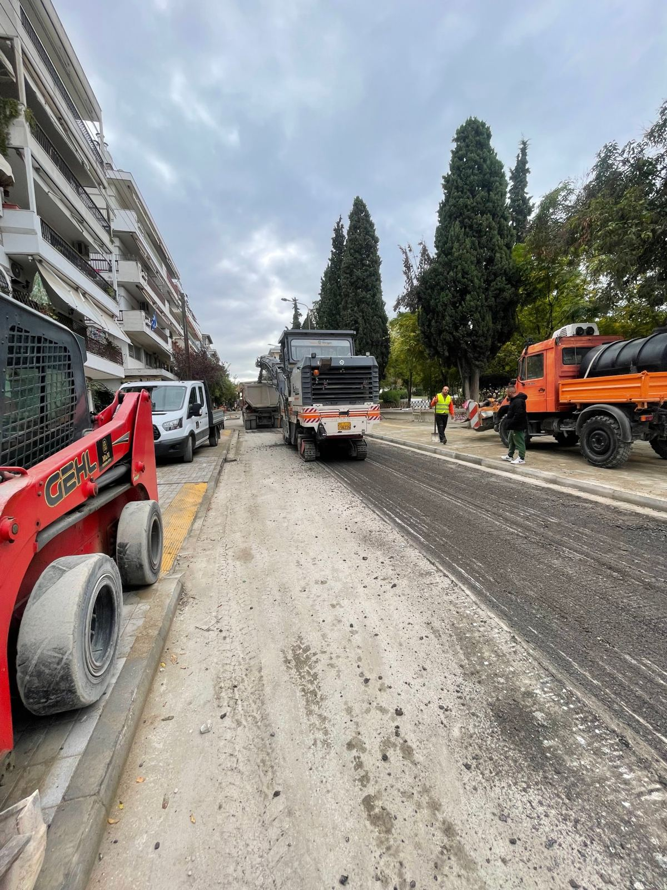
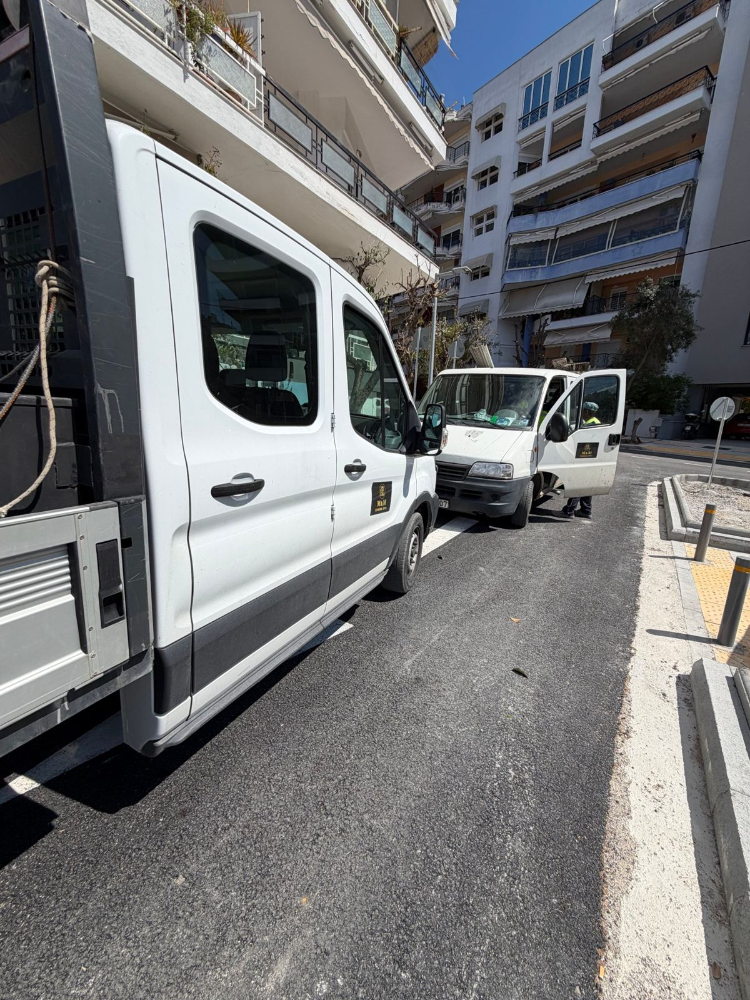
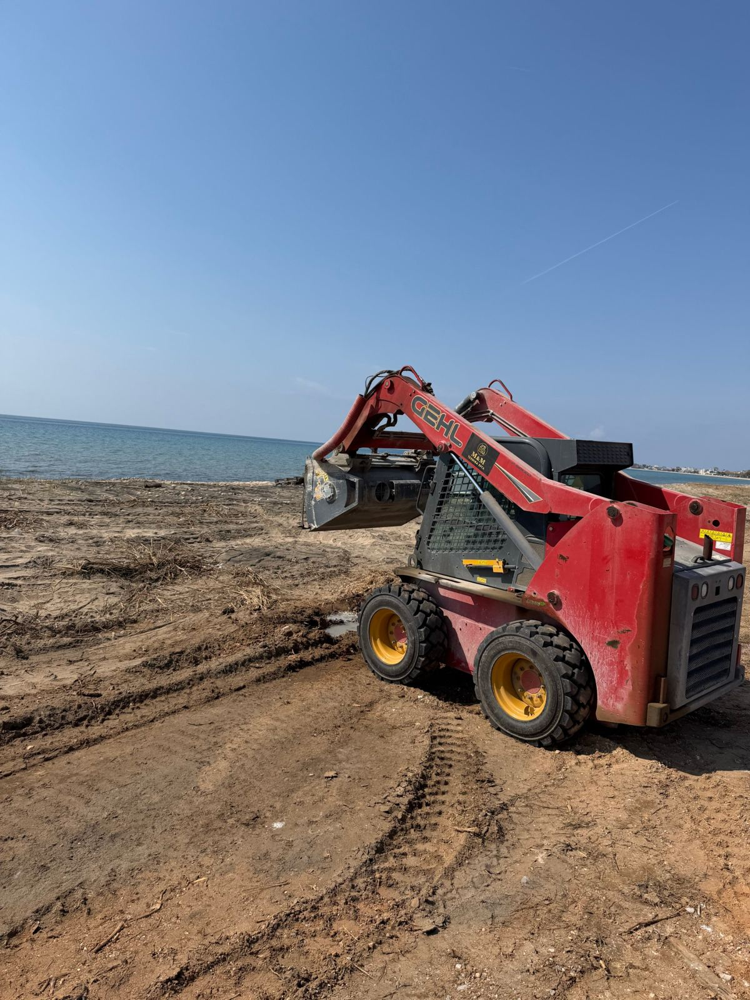
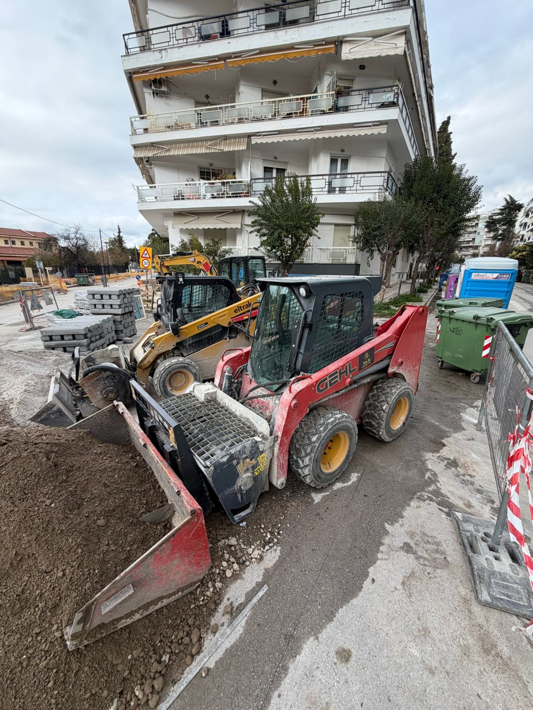
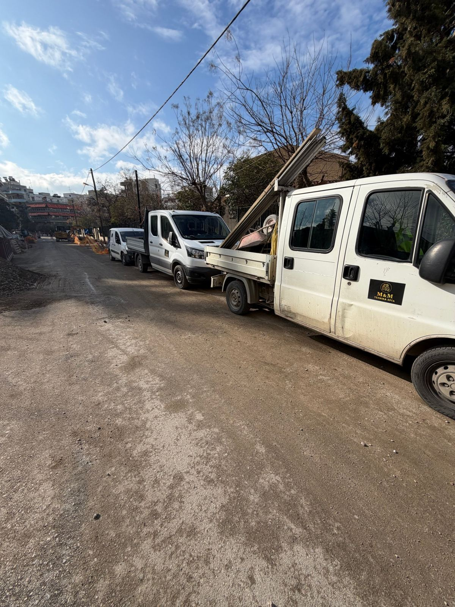

Αναπλάσεις Πεζοδρομίων
Καθαιρέσεις, υπόβαση, κρασπεδόρειθρα και πλακοστρώσεις με κυβόλιθους και τσιμεντόπλακες υψηλής αντοχής.

Δημόσια Έργα · Αναπλάσεις · Οδοποιία
Πεζοδρόμια, πλατείες, πάρκα και παραλιακά μέτωπα που αντέχουν στον χρόνο — σχεδιασμένα και εκτελεσμένα με τεχνική αρτιότητα και απόλυτη συνέπεια στα χρονοδιαγράμματα.
01 — Η Εταιρεία
Η M&M Τεχνικά Έργα εξειδικεύεται στην εκτέλεση δημοσίων έργων ανάπλασης. Συνεργαζόμαστε με Δήμους και φορείς για να μεταμορφώνουμε δρόμους, πεζοδρόμια και δημόσιους χώρους σε ασφαλή, λειτουργικά και προσβάσιμα περιβάλλοντα.
Με ιδιόκτητο μηχανολογικό εξοπλισμό, έμπειρα συνεργεία και αυστηρό ποιοτικό έλεγχο σε κάθε φάση, παραδίδουμε έργα που κάνουν τη διαφορά στην καθημερινότητα των πολιτών.
02 — Υπηρεσίες
Καθαιρέσεις, υπόβαση, κρασπεδόρειθρα και πλακοστρώσεις με κυβόλιθους και τσιμεντόπλακες υψηλής αντοχής.
Ολοκληρωμένη διαμόρφωση κοινόχρηστων χώρων: δαπεδοστρώσεις, φυτεύσεις, φωτισμός, αστικός εξοπλισμός.
Πεζόδρομοι και ποδηλατόδρομοι κατά μήκος της ακτής, σχεδιασμένοι να αντέχουν αλμύρα και έντονη χρήση.
Φρεζαρίσματα, ασφαλτοστρώσεις, διαγραμμίσεις και αποκαταστάσεις οδοστρωμάτων σε αστικό ιστό.
Οδηγοί τυφλών, ράμπες και διαβάσεις σύμφωνα με τις ισχύουσες προδιαγραφές προσβασιμότητας.
Δίκτυα ομβρίων, σωληνώσεις Η/Μ, φρεάτια και κάθε υποστηρικτική υποδομή του αστικού χώρου.
03 — Έργα







Πριν · Μετά
Από το εργοτάξιο στον ολοκληρωμένο δημόσιο χώρο. Κάθε έργο περνά από αυστηρό έλεγχο σε κάθε στάδιο.
04 — Μέθοδος
Αποτύπωση, ανάλυση μελέτης, χρονοδιάγραμμα και σχέδιο ασφάλειας εργοταξίου.
Σήμανση, περίφραξη και ασφαλής διαχείριση κυκλοφορίας πεζών και οχημάτων.
Εκτέλεση με ιδιόκτητο εξοπλισμό και έμπειρα συνεργεία, με ποιοτικό έλεγχο σε κάθε στάδιο.
Τελικός έλεγχος, καθαρισμός και έγκαιρη παράδοση ενός άρτιου έργου στον φορέα.

05 — Εξοπλισμός
Διαθέτουμε σύγχρονο μηχανολογικό εξοπλισμό που μας επιτρέπει να κινούμαστε γρήγορα και να ελέγχουμε κάθε φάση του έργου.
06 — Επικοινωνία